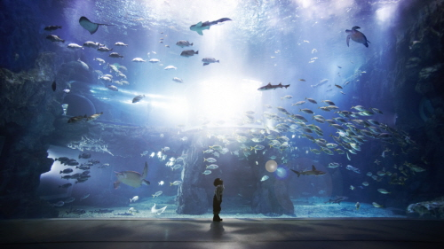
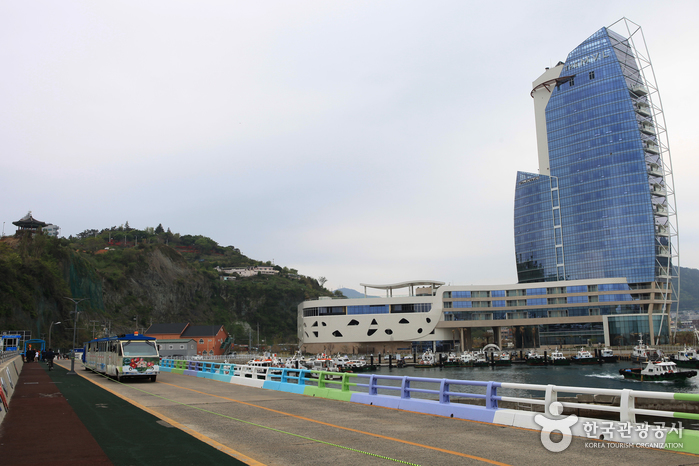
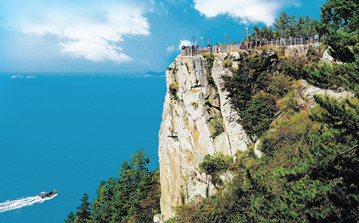
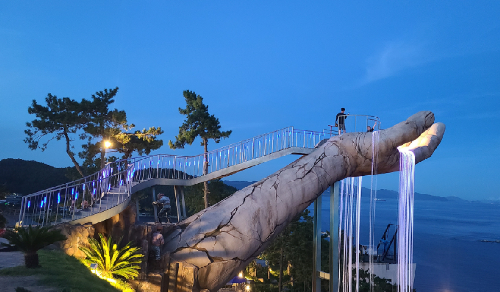

주요 관광지
-

아쿠아플라넷 여수
여수 신항 제2부두 인근에 자리한 국내 2위 규모의 아쿠아리움이다. ‘2012 여수세계박람회’ 메인 관람시설로 지정된 아쿠아플라넷 여수는 태양광발전에 의해 구현되는 친환경 아쿠아리움으로 각 층에는 차별화된 체험 전시공간을 운영하고 있다.
입장권 및 종합권 구매 가능 -

오동도
여수시에 있는 섬으로 멀리서 보면 섬의 모양이 오동잎처럼 보이고, 오동나무가 유난히 많아 오동도라 불리게 되었다. 여수의 중심가에서 약 10분쯤의 거리에 위치해 있으며 한국의 아름다운 길 100선에 선정된 바 있을 만큼 운치가 있으며, 한려해상국립공원에 속해 있다.
동백열차 이용권 구매 가능
-

금오도
여수 남서쪽에 위치한 섬으로 커다란 자라를 닮았다 하여 금오도라 이름 붙였다. 여수에서 배를 타고 20분정도면 도착해 다양한 전망을 감상할 수 있다. 아찔한 해안절벽을 따라 다도해상국립공원의 절경을 체험하는 비렁길 트래킹 코스로 유명하다.
-

여수 예술랜드
바다 앞에 조성된 조각공원과 스카이워크 체험을 할 수 있는 곳이다. 조각공원은 실내외 다양한 조형물들과 정원들을 바다 배경으로 감상할 수 있고, 트릭아트와 인공암반동굴, 마이더스의 손 등 유명한 포토존을 즐길 수 있다. 또한 바다 위를 체험하는 스카이워크, 공중 그네 등 신선한 경험을 할 수 있다.
트릭아트 및 조각공원 이용권 별도 구매 가능
맛집 및 카페
-

바다김밥
한식
주소 | 전남 여수시 통제영5길 10-4 바다김밥 -

이순신 수제버거
양식
주소 | 전남 여수시 중앙로 73 1층 -
청정게장촌
한식
주소 | 전남 여수시 봉산남4길 23-32